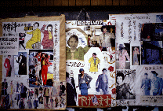
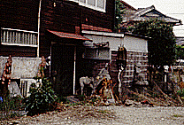
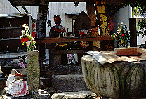
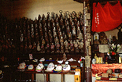
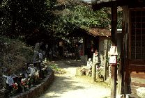
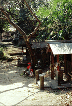
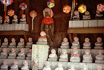
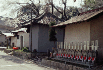

覚王山八十八ヶ所霊場/愛知県名古屋市
  
名古屋のコジャレ地帯、覚王山の中心地、日泰寺のまわりは不思議なところだ。
参道にはエスニック雑貨やトルコ飯屋などが軒を連ね、その合間には和洋折衷の古い民家や庭先に怪しい彫刻物が並ぶナゾの家、凄いコラージュ広告を掲げる洋品店など、コジャレた中にも濃ゆ〜いオーラがクサビのように所々注入されているエキサイティングなストリートだ。
万体地蔵堂なんかも結構凄いし。

で、その突き当たりには本丸の日泰寺があるのだが、この寺自体はそんなに見るべきところがあるわけではない。タイから貰った釈迦の骨を祀るために創立されたこの超党派の寺、と由縁は凄いが、本堂は平凡なコンクリート造だし、山門や五重の塔などもさして目新しいものでもない。強いていえば建築会の偉大なる奇人、伊東忠太の設計した仏舎利が納められてある奉安塔が異彩を放つくらいか（実は当初、この寺全体の設計を伊東が請け負ったのだが実現したのはこの奉安塔だけ。もし本堂などの建設も伊東忠太案で実現すれば築地本願寺に匹敵するような奇怪建築が出現したであろうに、残念）。しかしここで問題にしたいのはこの寺でなく、この寺付属の八十八ヶ所巡りの方である。
この日泰寺八十八ヶ所霊場、勿論、四国八十八ヶ所の写し霊場なのだが、このありようがチト凄い。
通常、八十八ヶ所巡りといえばある程度の広範囲（たとえば◯◯半島八十八ヶ所とか◯◯島八十八ヶ所など）
にわたって繰り広げられるものだが、ここのは寺の周辺数百メートル四方の中のＡからＧ地区と呼ばれる7つのエリアに写し霊場八十八ケ所が置かれているのだ。1ケ所に幾つもの札所が詰め込まれているのである。
私が訪れたのはそのうちの３ケ所。その中でも一番多くの札所が集まっており、一番凄まじかったのが日泰寺のすぐ東側にあったＢ地区と呼ばれるところであった。
日泰寺本堂から奉安塔への途中にあるこのＢ地区、札所の5〜23、25、86〜88番の23ケ所の札所が集まっているのだが、最初にその前を通った時は、公民館のようなところに小さなお堂やお地蔵さんが幾つか並ぶごくありきたりの風景という印象だった。ところが奉安塔からの帰り道、またこのＢ地区を通ってみると、どうも変だ。公民館のような建物の裏手にある家々がやけに小さいし密集しすぎている。見ようによっては物置き小屋だけが並んでいるようにも見える、ような気がして裏手にまわってみた。すると......
   
それらはすべてお堂だったのだ。23個のお堂がみっちりと二百坪くらいであろう土地に詰め込まれているのだ。そしてそれらのお堂はそれぞれが様々な手法---コンクリート造、木造瓦屋根、トタン張りバラック風等々---によって建てられており、配置も様々で全く統一感がない。ここに於いて始めてこの場所が八十八ケ所写し霊場ということを知る。凄い、凄すぎる。これはまるで仏様の集落みたいなもんじゃあないか。
ひとつひとつのお堂が個人で建設、管理されているらしく、様々な形態のお堂がギュウギュウに詰め込まれながらも全体としてひとつのグルーヴ感を醸しだしている。お堂とお堂の間が道のようになっており、ホトケの住む街といった様相を呈している。
しかもそれが住宅街のなかに見事に馴染んでいるのだ。
カイロにある亡くなった人専用の家が並ぶという「死者の街」なんてのもこんな感じなんだろうか。
このバラバラなお堂群、どこかで似たようなものを見たことがあると思った。そうだ学園祭の模擬店なんかが並んでいる、あの風景だ。ひとつひとつのエレメントが勝手きままな、あの素人臭い感じに良く似ている。
ところで、この八十八ケ所霊場、縁日にはそれぞれの管理者がお堂の前に人ひとり入れる位の小さなブースを設置し、納経をしてくれるという。これはぜひ見たいものだ。
情報提供はへりおすさんです
珍寺大道場 HOME